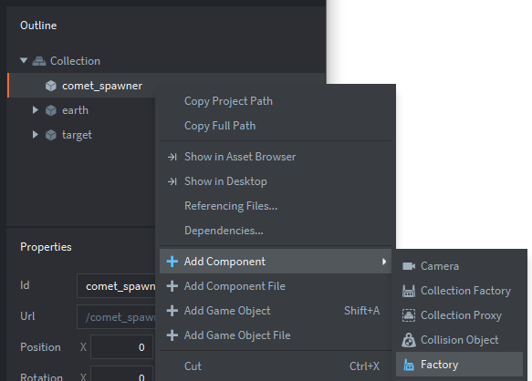
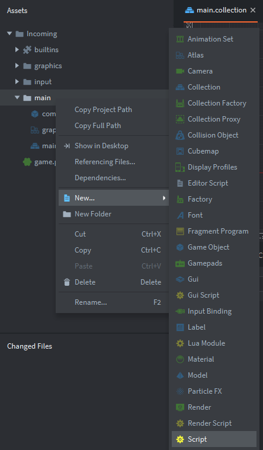

Tutorials for 2D games projects
Incoming | Creating an comet spawner.
Although Lua is not a truly object-oriented language, it is not difficult to see how the principles of OOP are applied to Defold developments:
- Defold developments use game objects. These are like classes.
- Game objects have properties and encapsulated variables using the 'self' structure. These are like attributes.
- Scripts have functions for initialising, handling inputs and updating. These are like methods.
- Game objects are self contained and use message passing to interact with each other. That is like a class interface.
In our game we want multiple comets, but we don't want to make hundreds of game objects that are all the same. Instead we use a factory component to build new instances of a comet game object when needed. Another feature of an object-oriented approach.
- In the assets panel, inside the 'main' folder, double click 'main.collection'.
- In the outline panel, add a new game object to the collection with the Id, 'comet_spawner'.
- In the outline panel, right click 'comet_spawner' and select, 'Add component', 'Factory'.

- We'll leave the Id as 'factory' because that describes accurately what the object is. In the properties panel, set the 'Prototype' property to, '/main/comet.go'. It's easier to use the three dots icon to do this.
The prototype is the game object that will be created by the factory. A factory can only create one type of object, so you must use a different factory for every type of object you want to spawn. It is worth knowing that there is a maximum number of objects that can be on-screen at any one time which is set in the game.project file.
If you have some familiarity with games development, you will know that 'pooling' is a technique used to limit the number of objects spawned. A pool of objects is created in advance. An object is only spawned if one is available in the pool. When an object dies it is returned to the available pool. This prevents more objects spawning than the computer can reasonably handle without seriously affecting the fps. Defold does automatic pooling under the hood. This is abstracted from you, so it is detrimental to add additional pooling algorithms of your own.
That's the factory ready to manufacture comet objects! We now need a script to get it working.
- In the assets panel, right click the 'main' folder, and select, 'New', 'Script'.

- Name the script, 'comet_spawner' and click, 'Create Script'.
- In the init function, change the code to initialise the random number generator.
function init(self)
-- set the random number seed and discard the first value
math.randomseed(os.time())
math.random()
self.spawn_rate = 90
endA new random number sequence is established. The first value is discarded.
An attribute called spawn_rate is initialised to 90. This will be used to set a 1 in 90 chance that a comet will spawn. We could make the game harder by decreasing this number, and easier by increasing the number. We are putting this value into a variable instead of "hard coding", so that we could change it in the code later if we want to introduce a variable difficulty to the game.
- In the update function, change the code to randomly spawn a comet, setting it's starting position.
function update(self, dt)
local spawn = math.random(1,self.spawn_rate)
if spawn == 1 then
local start_pos = math.random(1,4)
local x = 0
local y = 0
if start_pos == 1 then
-- Spawn to the left of the screen
x = -10
y = math.random(0,640)
end
if start_pos == 2 then
-- Spawn to the right of the screen
x = 960
y = math.random(0,640)
end
if start_pos == 3 then
-- Spawn at the top of the screen
x = math.random(0,960)
y = 660
end
if start_pos == 4 then
-- Spawn at the bottom of the screen
x = math.random(0,960)
y = -10
end
local pos = vmath.vector3(x,y,0)
factory.create("/comet_spawner#factory",pos)
end
endA random number is generated. If the number is a 1 (you could use any value here up to the spawn rate) then we continue the spawn code. This ensures comets spawn randomly, but not too frequently.
start_pos becomes a random number between 1 and 4. This is the starting position of the comet, either at the top, bottom, left or right of the screen. Note how comments are used to good effect here to make it obvious what is happening.
x and y local variables are used to store the starting position in pixels.
These are then converted into a vector data type and the factory is called to create the object at that position.
Note how we use the Url of the factory when calling it: '/comet_spawner#factory'. You can find these Urls in the properties of the object you want to refer to.
We now need to attach the script to the comet spawner object. This is the step that is often forgotten and why the code won't work!
- In the assets panel, in the 'main' folder, double click, 'main.collection'.
- In the outline panel, right click, 'comet_spawner' and select, 'Add Component File'.
- Select, '/main/comet_spawner.script' and click, 'OK'.
That's the comet spawner complete. Now we need to tell the comet game object to move in each frame.
- In the assets panel, right click the 'main' folder, and select, 'New', 'Script'.
- Name the script, 'comet' and click, 'Create Script'.
- Change the init function to move the comet object as an animation when it is spawned.
function init(self)
local towards_earth = vmath.vector3(480,320,0)
go.animate(".", "position", go.PLAYBACK_ONCE_FORWARD, towards_earth, go.EASING_LINEAR, 2)
endtowards_earth is a local varibale that holds a vector to the middle of the earth. We set the earth to be in the middle of the screen so a vector towards it would be at 480,320.
We use the animate command to cause the comet to move towards the vector.
In the pong tutorial we did this ourselves by manually changing the x and y position of the ball in the update function. In this tutorial we show you a different approach. Generally if you want fine control over movement, change the position in the update function yourself. If you want to set a trajectory and effectively "fire and forget", then use the animate command.
The animate command is incredibly powerful. You can use it to fade objects in and out and many other effects. The parameters are:
- the Url of the object to apply the animation to. "." means the current object.
- property to animate - "position" is what we are changing - the position of the comet on the screen.
- playback mode - go.PLAYBACK_ONCE_FORWARD - we only want the object to reach the earth.
- target - towards_earth - the vector to the target position.
- easing - go.EASING_LINEAR - how the animation changes over time. Linear is a default as we don't want anything to change except the position.
- time - 2 means we want it to take 2 seconds to complete the animation. In other words, it should reach earth in two seconds. We hard-coded this. We could pass a variable from the factory instead, but we'll keep it simple here!
- delay - how long to wait in seconds before the animation starts. We are using the default 0.
- complete function - code to execute when the animation is complete.
Now we need to attach the script to the comet game object.
- In the assets panel, double click, 'comet.go'
- In the outline panel, right click, 'Game Object' and select, 'Add Component File'.
- Select '/main/comet.script'
- Save the changes by pressing CTRL-S or 'File', 'Save All'.
- Run your game at this point. It should now spawn comets.

The comets don't despawn yet because we haven't written any colliision handling code, but you can see how factories and animations work. We could code this next, but instead we'll come back to it later and work on the player interaction instead. Stage 5 >
 Craig'n'Dave | Version 1.3
Craig'n'Dave | Version 1.3